SERVING NOTE 01 / SCALE
Scaling the Table for the Guest Count
A measured guide to guest count, place width and table scale for real gatherings.
Open note →SERVING JOURNAL / 01—12
Independent practical guidance for scale, linen, light, tableware, seasonal menus, hosting rhythm and care.
A measured guide to guest count, place width and table scale for real gatherings.
Open note →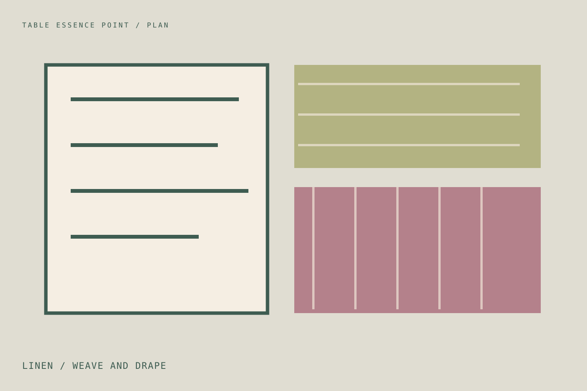
A measured guide to linen weave, weight and drape for real gatherings.
Open note →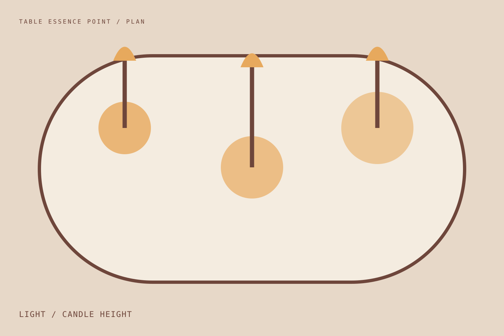
A measured guide to candle height, safe spacing and evening light for real gatherings.
Open note →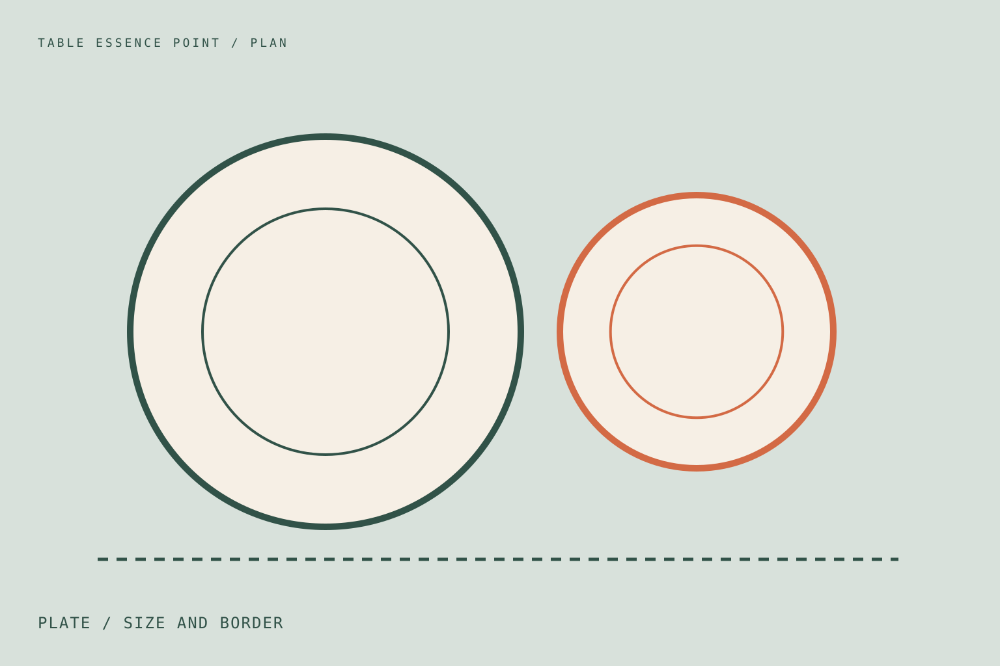
A measured guide to plate size, borders and food composition for real gatherings.
Open note →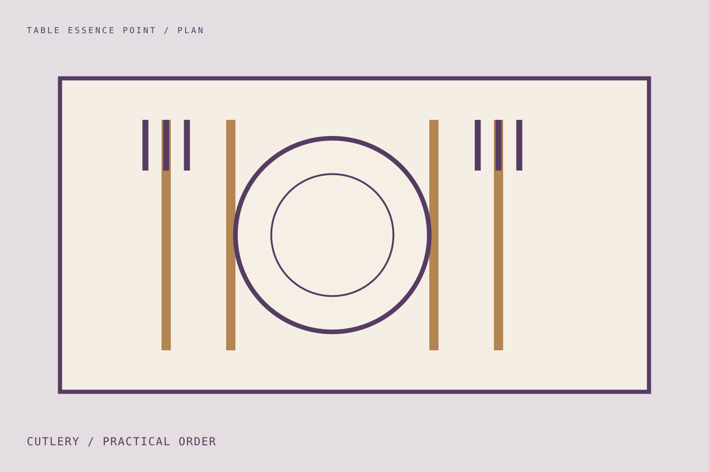
A measured guide to cutlery order, practical use and clear space for real gatherings.
Open note →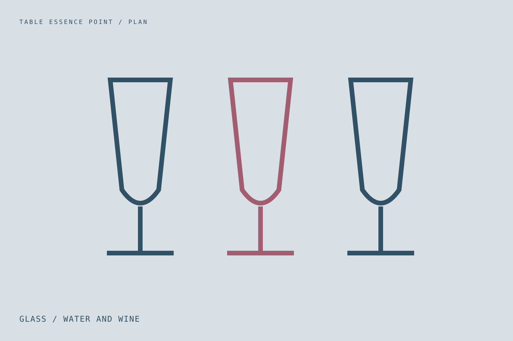
A measured guide to glass shape, stability and drink service for real gatherings.
Open note →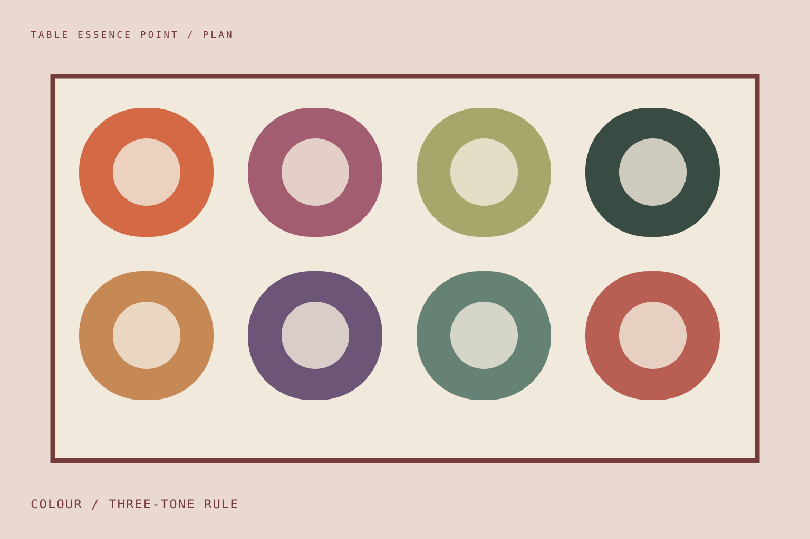
A measured guide to a restrained three-colour table palette for real gatherings.
Open note →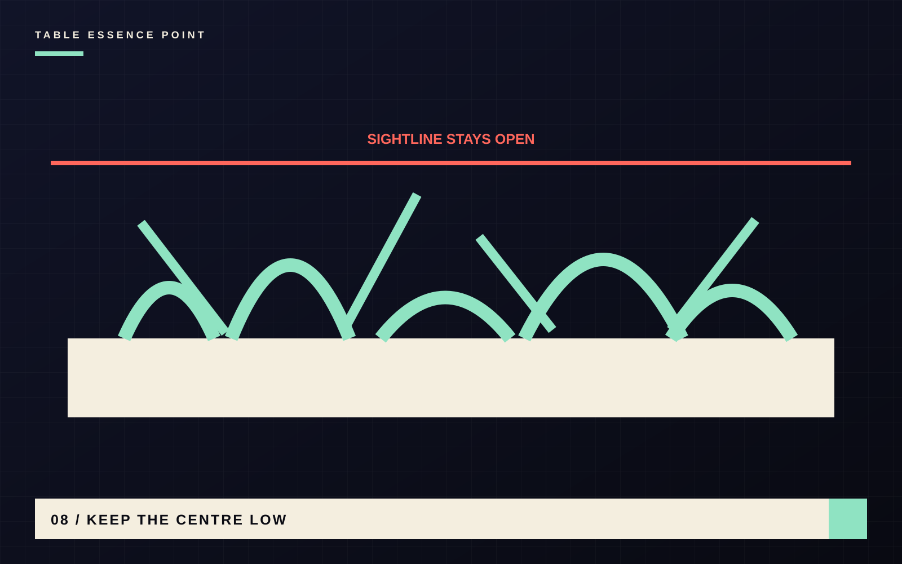
A measured guide to low centrepieces and open sightlines for real gatherings.
Open note →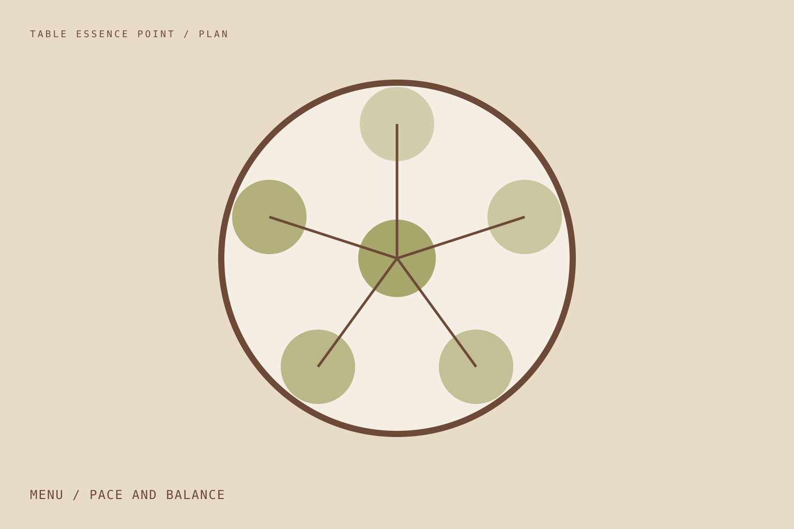
A measured guide to menu sequence, timing and host workload for real gatherings.
Open note →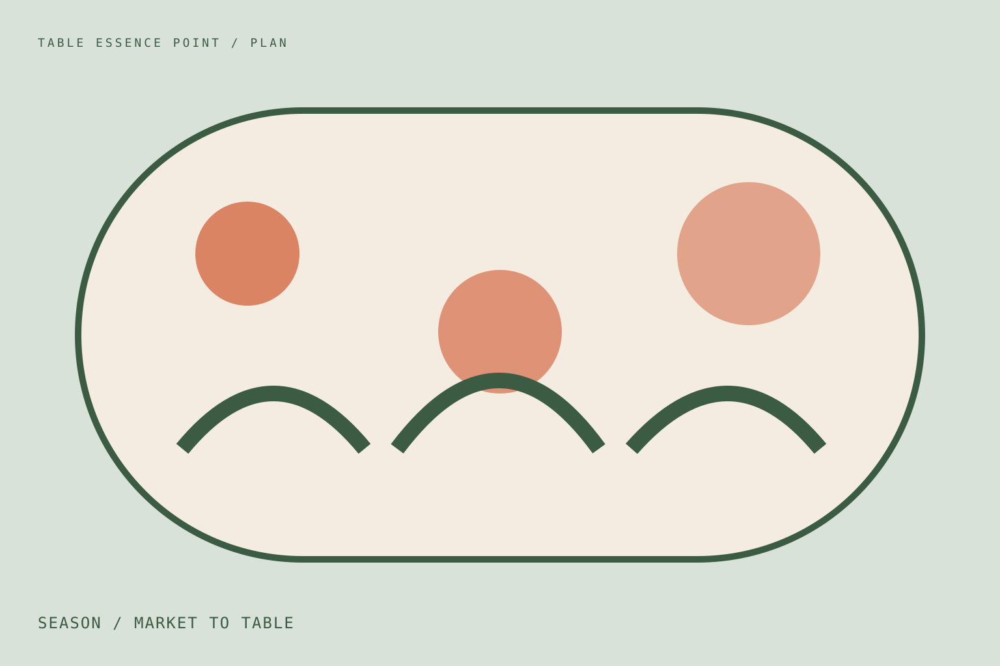
A measured guide to seasonal ingredients, serving and table colour for real gatherings.
Open note →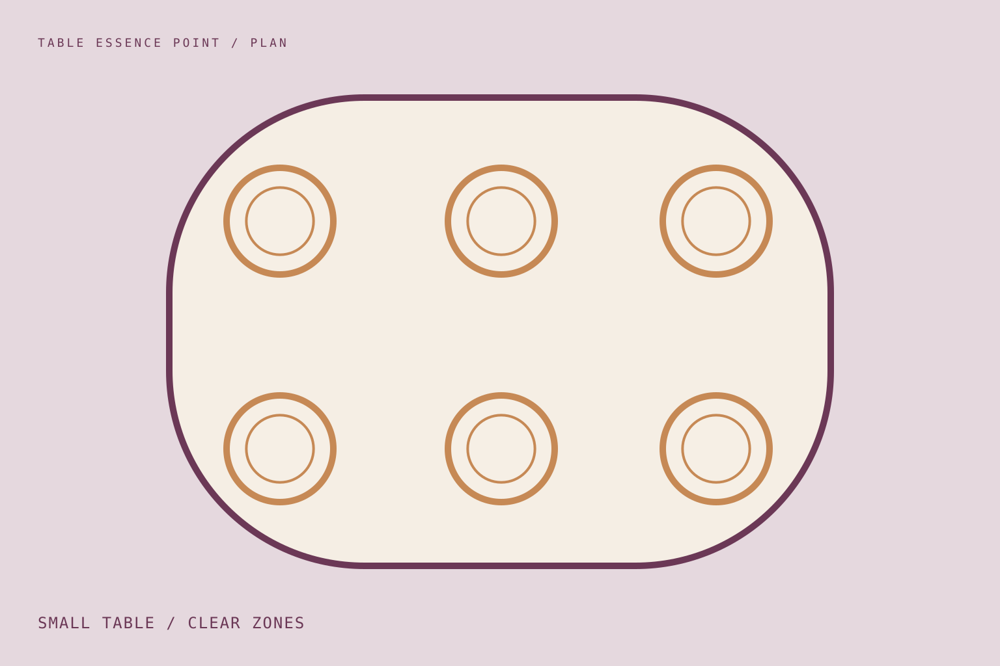
A measured guide to small-table zones, reach and negative space for real gatherings.
Open note →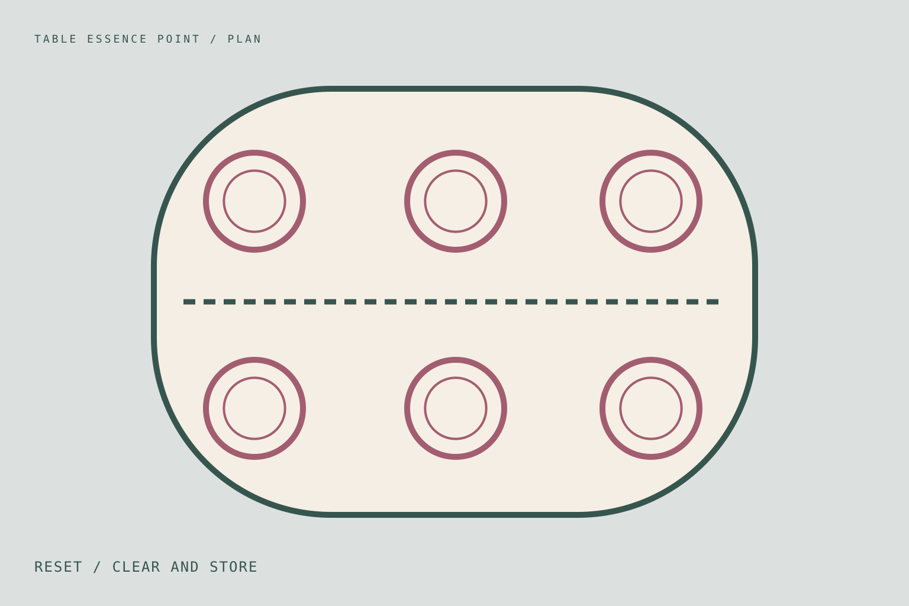
A measured guide to clearing, washing, drying and storage for real gatherings.
Open note →